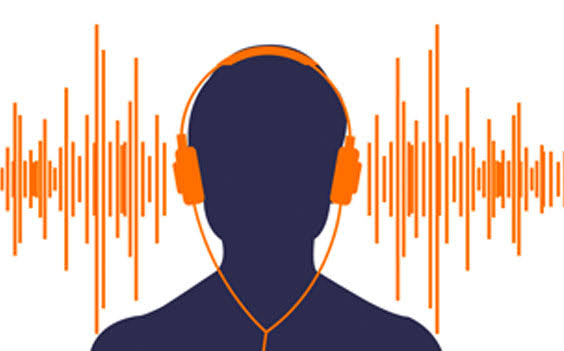

Musée de
l'Audition
9 thématiques · du son à l'oreille
Musée de l'Audition
Sommaire
Un voyage pour découvrir les sons et les sens.
Sommaire des thématiques
01
Onde sonore
Propagation, compression et raréfaction de l'air. Qu'est-ce qu'un son ?
Explorer →
02
Caractéristiques d'un son
Fréquence & hauteur — Amplitude & intensité. Les paramètres fondamentaux.
Explorer →
03
Spectre sonore
Infrasons, sons audibles, ultrasons. La carte des fréquences.
Explorer →
04
Son émis par une corde
Modes de vibration, harmoniques et fréquence fondamentale.
Explorer →
05
Intensité & niveau sonore
L'échelle des décibels, puissance acoustique et perception humaine.
Explorer →
06
Structure de l'oreille
Oreille externe, moyenne et interne. Anatomie et rôles de chaque partie.
Explorer →
07
Conversion en message nerveux
De la cochlée au nerf auditif — la transduction mécano-électrique.
Explorer →
08
Risques auditifs
Traumatismes sonores, exposition prolongée, prévention et seuils de danger.
Explorer →
09
Anomalies & Aides auditives
Surdité, implants cochléaires, appareils auditifs, langue des signes et test auditif interactif.
Explorer →